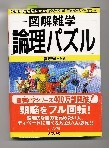

「論理パズル（夢現社編集/ナツメ社刊\1200）」という本を買ってきた。タイトルのごとく、魔法陣とかサイコロ関係の確率を題材にしたパズルの本。

たとえばサイコロの確率では、「サイコロ１個のサイコロを10回振ったとき、６の目が１回でるのと、１の目が２回出るのでは、どっちが確率が高いか」なんて問題が載っている。
読んでいると、中程に麻雀を題材にしたパズルが一問、載っていた。面白そうなので紹介しようと思ったが、論理パズルなので、牌謎(パイメー)とか詰め麻雀のたぐいではない。
かといって麻雀関係の本でもないので、「書談」でもない。そこでまぁ、このカテゴリーで取り上げることにした。
ある日、春彦、夏夫、秋江、冬美の４人がトップ３点、２位２点、３位１点、４位０点という評価法で、麻雀を３ゲーム楽しんだ。、成績は春彦３点、夏夫６点、秋江８点、冬美１点という結果であった。さて４人は３回のゲームで、何着を何回取ったであろうか。
という問題。
σ(-_-)はうっかり答えを見てしまったので（笑）分かっているが、それを書いてしまったのでは、こういうパズルが好きな方に申し訳ない。(^-^)
ということで、問題の紹介だけにしておく。
|